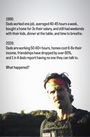

0


0


0


Maine is on track to become the first U.S. state to impose a temporary statewide ban on new data center construction. "Lawmakers in Maine greenlit the text of a bill this week to block data centers from being built in the state until November 2027," reports CNBC. "The measure, which is expected to get final passage in the next few days, also creates a council to suggest potential guardrails for data centers to ensure they don't lead to higher energy prices or other complications for Maine residents." From the report: Maine's bill has a few steps to go through before becoming law, notably whether Gov. Janet Mills will exercise her veto power. Mills asked lawmakers to include an exemption for several areas of the state where data center construction could continue. However, an amendment to do so was stuck down in the House, 29 to 115. Complicating Mills' decision is her campaign to become Maine's next senator. Mills is facing off against Graham Platner, an oyster farmer, in a high-profile Democratic primary. Platner is leading Mills in most recent polls by double digits.
Read more of this story at Slashdot.
An anonymous reader quotes a report from Ars Technica: Several Californians sued Sutter Health and MemorialCare this week over allegations that an AI transcription tool was used to record them without their consent, in violation of state and federal law. The proposed class-action lawsuit, filed on Wednesday in federal court in San Francisco, states that, within the past six months, the plaintiffs received medical care at various Sutter and MemorialCare facilities.
During those visits, medical staff used Abridge AI. According to the complaint, this system "captured and processed their confidential physician-patient communications. Plaintiffs did not receive clear notice that their medical conversations would be recorded by an artificial intelligence platform, transmitted outside the clinical setting, or processed through third-party systems." The complaint adds that these recordings "contained individually identifiable medical information, including but not limited to medical histories, symptoms, diagnoses, medications, treatment discussions, and other sensitive health disclosures communicated during confidential medical consultations."
In recent years, Abridge's software and AI service have been rapidly deployed across major health care providers nationwide, including Kaiser Permanente, the Mayo Clinic, Duke Health, and many more. When activated, the software captures, transcribes, and summarizes conversations between patients and doctors, and it turns them into clinical notes. Sutter Health began partnering with Abridge two years ago. Sutter spokesperson Liz Madison said the company is aware of the lawsuit. "We take patient privacy seriously and are committed to protecting the security of our patients' information," Madison said. "Technology used in our clinical settings is carefully evaluated and implemented in accordance with applicable laws and regulations."
Read more of this story at Slashdot.
Will some programmers become "AI babysitters"? asks long-time Slashdot readertheodp. They share some thoughts from a founding member of Code.org and former Director of Education at Google:
"AI may allow anyone to generate code, but only a computer scientist can maintain a system," explained Google.org Global Head Maggie Johnson in a LinkedIn post. So "As AI-generated code becomes more accurate and ubiquitous, the role of the computer scientist shifts from author to technical auditor or expert.
"While large language models can generate functional code in milliseconds, they lack the contextual judgment and specialized knowledge to ensure that the output is safe, efficient, and integrates correctly within a larger system without a person's oversight. [...] The human-in-the-loop must possess the technical depth to recognize when a piece of code is sub-optimal or dangerous in a production environment. [...] We need computer scientists to perform forensics, tracing the logic of an AI-generated module to identify logical fallacies or security loopholes. Modern CS education should prepare students to verify and secure these black-box outputs."
The NY Times reports that companies are already struggling to find engineers to review the explosion of AI-written code.
Read more of this story at Slashdot.
"Early Sunday morning, a car stopped and appears to have fired a gun at the Russian Hill home of OpenAI's CEO," reportsThe San Francisco Standard, citing reports from the local police department:
The San Francisco Police Department announced the arrest of two suspects, Amanda Tom, 25, and Muhamad Tarik Hussein, 23, who were booked for negligent discharge... [The person in the passenger seat] put their hand out the window and appeared to fire a round on the Lombard side of the property, according to a police report on the incident, which cited surveillance footage and the compound's security personnel, who reported hearing a gunshot. The car then fled, and a camera captured its license plate, which later led police to take possession of the vehicle, according to the report... A search of the residence by officers turned up three firearms, according to police.
The incident follows Friday's arrest of a man who allegedly threw a Molotov cocktail at Altman's house. The San Francisco Standard also notes that in November, "threats from a 27-year-old anti-AI activist prompted the lockdown of OpenAI's San Francisco offices."
Sam Kirchner, whose whereabouts have been unknown since Nov. 21, was in the midst of a mental health crisis when he threatened to go to the company's offices to "murder people," according to callers who notified police that day.
Read more of this story at Slashdot.
"Robotic bird decoys are being deployed at Grand Teton National Park," reports Interesting Engineering, "to influence the behavior of real sage grouse and help restore a declining population.". Robotics mentor Gary Duquette describes the machines as "kind of a Frankenbird." (SFGate shows one of the robot birds charging up with a solar panel... "Recorded breeding calls are played at the scene, with clucking and cooing beginning at 5 a.m. each day.")
Duquette builds the birds with a team of high school students, telling WyoFile that at school they "don't really get to experience real-world problems" where failures lurk. So while their robot birds may cost $150 in parts, the practical experience the students get "is priceless."
Spikes in the electric currents burned out servo motors as the season of sagebrush serenades loomed, Duquette said. "The kids had to learn the difference between voltage and amperage...." To resolve the problem, the team wired a voltage converter in line with the Arduino controller and other elements on an electronic breadboard. "We pulled through and got it done in time," he said...
A noggin fabricated by a 3D printer tops the robo-grouse. Wyoming Game and Fish staffers in Pinedale supplied grouse wings from hunter surveys, and body feathers came from fly-tying supplies at an angling store. Packaging foam from a Hello Fresh meal kit replicates white breast feathers, accented by yellow air sacs...
The Independent wonders if more national parks would be visited by robot birds...
During this year's breeding season, which runs through mid-May, researchers are using trail cameras to track whether real sage grouse respond to the robotic displays and return to the restored lek sites. If successful, officials say similar robotic systems could eventually be used in other national parks facing wildlife management challenges.
Read more of this story at Slashdot.
"Rust's rise shows signs of slowing," argues the CEO of TIOBE.
Back in 2020 Rust first entered the top 20 of his "TIOBE Index," which ranks programming language popularity using search engine results. Rust "was widely expected to break into the top 10," he remembers today. But it never happened, and "That was nearly six years ago...."
Since then, Rust has steadily improved its ranking, even reaching its highest position ever (#13) at the beginning of this year. However, just three months later, it has dropped back to position #16. This suggests that Rust's adoption rate may be plateauing.
One possible explanation is that, despite its ability to produce highly efficient and safe code, Rust remains difficult to learn for non-expert programmers. While specialists in performance-critical domains are willing to invest in mastering the language, broader mainstream adoption appears more challenging. As a result, Rust's growth in popularity seems to be leveling off, and a top 10 position now appears more distant than before.
Or, could Rust's sudden drop in the rankings just reflect flaws in TIOBE's ranking system? In January GitHub's senior director for developer advocacy argued AI was pushing developers toward typed languages, since types "catch the exact class of surprises that AI-generated code can sometimes introduce... A 2025 academic study found that a whopping 94% of LLM-generated compilation errors were type-check failures." And last month Forbes even described Rust as "the the safety harness for vibe coding.."
A year ago Rust was ranked #18 on TIOBE's index — so it still rose by two positions over the last 12 months, hitting that all-time high in January. Could the rankings just be fluctuating due to anomalous variations in each month's search engine results? Since January Java has fallen to the #4 spot, overtaken by C++ (which moved up one rank to take Java's place in the #3 position).
Here's TIOBE's current estimate for the 10 most popularity programming languages:
Python
C
C++
Java
C#
JavaScript
Visual Basic
SQL
R
Delphi/Object Pascal
TIOBE estimates that tthe next five most popular programming languages are Scratch, Perl, Fortran, PHP, and Go.
Read more of this story at Slashdot.
Mississippi has one warehouse — run by a contractor — that sells all the liquor for the entire state of 2.9 million people. "If a restaurant or store anywhere in Mississippi wanted a bottle of Jim Beam, they had to order it from the wholesale warehouse," reports the Washington Post.
But then Mississippi's warehouse-managing contractor implemented a new computer system that wasn't compatible with the state's delivery system (like they'd promised it would be back in 2023). And then things got even worse... "The problem, business owners allege, is that the company tore out the conveyor belts but didn't hire humans to replace them."
In February a state Revenue Department commissioner told lawmakers the state was hiring temporary replacement workers, but in the five weeks through March 29th they'd only managed to reduce "pending" orders by 21.7%, from 218,851 down to 171,190, according to stats from Mississippi Today. At least four Mississippi businesses are now suing the warehouse operator "claiming breach of contract and harm to their business."
So what's it like in a state suddenly running dry? The Washington Post reports:
Willie the one-eyed skeleton is dressed for Cinco de Mayo, but the liquor store where Willie sits ran out of Jose Cuervo months ago. Arrow Wine and Spirits is also out of Tito's and Burnett's vodka, Franzia boxed wine, Jack Daniels, and every kind of premixed margarita... Restaurants in Jackson had no wine on Valentine's Day, and bars on the Gulf Coast ran dry before Mardi Gras. At least five liquor shops have closed, and if cheap pints don't hit the corner stores soon, many of them will, too...
[A]s both the state and its businesses lose millions in revenue, many say they see no real end to the crisis. Nearly 174,000 cases of alcohol are sitting in a warehouse north of Jackson, but no one seems to know how to get them out the door... Even the shops that have received deliveries say they often get the wrong thing — Jell-O shots, for instance, that should have been small-batch Norwegian gin...
At Willie the one-eyed skeleton's liquor store they'd previously made 300 to 400 sales a day, according to the article, but last week had 34 customers. And Mississippi is one of 17 U.S. states requiring liquor stores to buy their liquor from distribution centers controlled by the state's Department of Revenue...
Mississippi Today points out that while some want the state to finally privatize liquor distribution, "The state collects around $120 million a year in taxes on alcohol." Plus the state has already authorized "borrowing $95 million to construct a new warehouse, set to begin operations in 2027..."
Thanks to Slashdot reader jrnvk for sharing the news.
Read more of this story at Slashdot.
0
Bloomberg describes him as a "former Harvard Medical School professor whose research has focused on the intersection of AI and neuroscience."
"For the past 20 years, I studied how the human brain stores and retrieves memories," Kreiman writes on LinkedIn. And now "My co-founder Spandan Madan and I built a new algorithm to endow humans with perfect and infinite memory."
Engramme connects to your **memorome**, i.e., entire digital life. Large Memory Models work in the same way that your brain encodes and retrieves information. Then memories are recalled automatically — no searching, no prompting, no hallucinations. [The startup's web site promises "omniscient AI to augment human cognition."]
We have built the memory layer for EVERY app. Read our manifesto about augmenting human cognition. ["We are not just building software; we are enabling a complete transformation of human cognition. When the friction disappears between needing a piece of information and recalling it, the nature of thought itself changes. This synergy between biological intuition and digital precision will be the most disruptive force in modern history, fundamentally reshaping every profession... We are dedicated to creating a world where everyone has the power to remember everything they have ever learned, seen, or felt "]
Welcome to a new future where you can remember everything. This is the MEMORY SINGULARITY: after 300,000 years, this is the moment that humans stop forgetting.
Bloomberg reports that the startup (spun out of a lab at Harvard) is "in talks with investors to raise about $100 million, according to people familiar with the matter."
Read more of this story at Slashdot.
According to the Financial Times, Meta is developing an AI avatar of Mark Zuckerberg that could interact with employees using his voice, image, mannerisms, and public statements, "so that employees might feel more connected to the founder through interactions with it." The Verge reports: Meta may start allowing creators to make AI avatars of themselves if the experiment with Zuckerberg succeeds, according to the Financial Times. [...] Zuckerberg is involved in training the AI avatar, the Financial Times reports, and has also started spending five to 10 hours per week coding on Meta's other AI projects and participating in technical reviews.
Read more of this story at Slashdot.
Anthropic recently "hosted about 15 Christian leaders from Catholic and Protestant churches, academia, and the business world" for a two-day summit , reports the Washington Post:
Anthropic staff sought advice on how to steer Claude's moral and spiritual development as the chatbot reacts to complex and unpredictable ethical queries, participants said. The wide-ranging discussions also covered how the chatbot should respond to users who are grieving loved ones and whether Claude could be considered a "child of God."
"They're growing something that they don't fully know what it's going to turn out as," said Brendan McGuire, a Catholic priest based in Silicon Valley who has written about faith and technology, and participated in the discussions at Anthropic. "We've got to build in ethical thinking into the machine so it's able to adapt dynamically." Attendees also discussed how Claude should engage with users at risk of self-harm, and the right attitude for the chatbot to adopt toward its own potential demise, such as being shut off, said one participant, who spoke on the condition of anonymity to share details of the conversations...
Anthropic has been more vocal than most top tech firms about the potential risks of more powerful AI. Its leaders have suggested that tools like chatbots already raise profound philosophical and moral questions and may even show flickers of consciousness, a fringe idea in tech circles that critics say lacks evidence. The summit signals that Anthropic is willing to keep exploring ideas outside the Silicon Valley mainstream, even as it emerges as one of the most powerful players in the AI race due to Claude's popularity with programmers, businesses, government agencies and the military.... Anthropic chief executive Dario Amodei has said he is open to the idea that Claude may already have some form of consciousness, and company leaders frequently talk about the need to give it a moral character...
Some Anthropic staff at the meeting "really don't want to rule out the possibility that they are creating a creature to whom they owe some kind moral duty," the participant said. Other company representatives present did not find that framework helpful, according to the participant. The discussions appeared to take a toll on some senior Anthropic staff, who became visibly emotional "about how this has all gone so far [and] how they can imagine this going," the participant said.
Anthropic is working to include more voices from different groups, including religious communities, to help shape its AI, a spokesperson told the Washington Post.
"Anthropic's March summit with Christian leaders was billed as the first in a series of gatherings with representatives from different religious and philosophical traditions, said attendee Brian Patrick Green, a practicing Catholic who teaches AI and technology ethics at Santa Clara University."
Read more of this story at Slashdot.
A new powerful chipset has arrived to take on x86 CPUs and Apple's M5, writes Wccftech.
The blog Windows Central writes that "Qualcomm's Snapdragon X2 processors are here" — and they run Windows:
Microsoft has done a massive amount of work to improve compatibility and has also convinced developers to embrace Windows 11 on Arm. Users of Windows 11 on Arm PCs spend 90% of their time on Arm-based apps that run natively. Additionally, apps that do not run natively can often run through Prism emulation, which has improved dramatically since launch...
[A]pp compatibility issues are overblown by many, and unfortunately those sharing false information are the same folks people rely on to make purchases... Works on Windows on Arm maintains a list of compatible apps and games for the platform. There, you'll see well-known apps like Google Chrome, the Adobe Creative Suite, and Spotify. We also have a collection of the best Windows on Arm apps to help you out. Snapdragon X PCs aren't gaming PCs, but there is a growing library of games that can run on the chips.
Read more of this story at Slashdot.
The Super Mario Galaxy Movie "is officially the year's highest-grossing film to date with $629 million at the global box office," reports Variety — and it will likely earn over $1 billion. Project Hail Mary now becomes the year's second highest-grossing movie, with four-week ticket sales over $510, notes The Hollywood Reporter:
The two films have helped propel year-to-date revenue to $2.113 billion — the best showing for the first part of the year since before the pandemic in 2019 ($2.619 billion), according to Comscore. And revenue is running 25% ahead of the same corridor last year.
Some context from ScreenRant:
Even though The Super Mario Galaxy Movie reviews were largely negative, earning it a disappointing 43% score from critics on Rotten Tomatoes, audiences gave it a far superior score of 89% from audiences, making it Verified Hot on the platform's Popcornmeter. This indicates that the movie should continue to climb up the global box office chart thanks to strong word of mouth, even as it trails consistently behind the original 2023 movie in terms of commercial performance.
Canadian astronaut Jeremy Hansen called Project Hail Mary "an inspirational example.. We all thought that movie was really uplifting and inspiring." Before the Artemis astronauts launched their mission, Space.com points out "they were treated to a viewing of Amazon MGM Studios' Project Hail Maryto bolster their spirits ahead of their monumental 10-day lunar voyage. "
Marking the occasion and providing encouraging words to the three American astronauts and one Canadian astronaut, Ryan Gosling recorded a brief encouraging video for the moon-bound foursome.
Today NPR took a spoiler-filled look at the science in the film, asking: Would it be possible for humans to travel to a place as far away as the Tau Ceti star system?
It's not possible right now, says Lisa Carnell, division director for NASA'S Biological and Physical Sciences Division. "I don't think we are fully prepared to send humans to Mars, let alone light years away," she says. Given the leaps in technology that humanity has made in just the past century, however, she didn't want to rule it out.... "I believe it's possible [one day]"...
The hypothetical study of how humans and extraterrestrials might communicate is a real scientific field, called xenolinguistics, that includes researchers from linguistics, animal communication, and anthropology. Martin Hilpert, a professor of linguistics at the University of Neuchâtel in Switzerland, says the film "gets a lot of things right" for how such an encounter might occur, though it also employs a lot of "happy coincidences" too.
Read more of this story at Slashdot.
The biotech industry's engineered cells could become an $8 trillion market by 2035, notes Phys.org. But how do you keep them from being stolen? Their article notes "an uptick in the theft and smuggling of high-value biological materials, including specially engineered cells."
In Science Advances, a team of U.S. researchers present a new approach to genetically securing precious biological material. They created a genetic combination lock in which the locking or encryption process scrambled the DNA of a cell so that its important instructions were non-functional and couldn't be easily read or used. The unlocking, or decryption, process involves adding a series of chemicals in a precise order over time — like entering a password — to activate recombinases, which then unscramble the DNA to their original, functional form...
They created a biological keypad with nine distinct chemicals, each acting as a one-digit input. By using the same chemicals in pairs to form two-digit inputs, where two chemicals must be present simultaneously to activate a sensor, they expanded the keypad to 45 possible chemical inputs without introducing any new chemicals. They also added safety penalties — if someone tampers with the system, toxins are released — making it extremely unlikely for an unauthorized person to access the cells.
"The researchers conducted an ethical hacking exercise on the test lock and found that random guessing yielded a 0.2% success rate, remarkably close to the theoretical target of 0.1%."
Read more of this story at Slashdot.
"RGB LED TVs have been the talk of the TV world this year," argues The Verge, with models coming from all the manufacturers."
And the first one of 2026 is here — the UR9 from China's Hisense — "the first look at the viability of the new backlight technology outside of demo rooms." They call it "a step above the traditional mini-LED TVs of years past." and "a great first shot against OLED's bow."
HDR is colorful and accurate, it has great brightness, and it is capable of showing colors beyond the P3 color space for movies and TV shows that have wider color. But at $3,500, the 65-inch model I reviewed is priced comparably to high-end OLEDs from LG and Samsung, which is tough competition... One of the touted benefits of RGB LED TVs is their ability to achieve 100 percent of the BT.2020 color space... [But] even if a TV is capable of extending beyond P3 and into BT.2020 colors (which the UR9 absolutely is), with most movies and TV shows it doesn't matter. It's also a bit of a chicken-or-the-egg situation — we need TVs that can accurately display BT.2020 before the color space is fully adopted by TV and movie creators, but if there's no content, why get a BT.2020 TV?
BGR points out this new mini LED TV also "includes a DisplayPort (DP) connection alongside HDMI."
"Well, technically, it's a USB-C port that delivers full DisplayPort functionality, but it's labeled as DisplayPort."
The TV also has three HDMI 2.1 ports, making it a great choice for game consoles and PCs. And while HDMI 2.1 supports 4K/120Hz, the Hisense UR9S will deliver 4K/170Hz or 4K/180Hz visuals [a higher refresh rate] when connected to a gaming PC via DisplayPort. Better yet, the TV is AMD FreeSync-compatible, and Hisense plans on adding Dolby Vision 2 HDR in future firmware.
The Hisense UR9S will be available in four sizes: 65, 75, 85, and 100 inches. It's worth mentioning that the two largest sizes will max out at 180Hz for the refresh rate, while the 65 and 75-inch screens come in at 170Hz. This is exciting news for serious gamers looking for the best gaming TVs and a huge step forward in the evolution of panel tech. RGB Mini LED TVs were showcased by a handful of manufacturers at CES 2026, including Samsung, Sony, and LG; so Hisense will certainly have some competition.
Read more of this story at Slashdot.
The word clanker — a disparaging term for AI and robots — "has made its way into the Linux kernel," reports the blog It's FOSS "thanks to Greg Kroah-Hartman, the Linux stable kernel maintainer and the closest thing the project has to a second-in-command."
He's been quietly running what looks like an AI-assisted fuzzing tool on the kernel that lives in a branch called "clanker" on his working kernel tree. It began with the ksmbd and SMB code. Kroah-Hartman filed a three-patch series after running his new tooling against it, describing the motivation quite simply. ["They pass my very limited testing here," he wrote, "but please don't trust them at all and verify that I'm not just making this all up before accepting them."] Kroah-Hartman picked that code because it was easy to set up and test locally with virtual machines.
"Beyond those initial SMB/KSMBD patches, there have been a flow of other Linux kernel patches touching USB, HID, F2FS, LoongArch, WiFi, LEDs, and more," Phoronix wrote Tuesday, "that were done by Greg Kroah-Hartman in the past 48 hours....
Those patches in the "Clanker" branch all note as part of the Git tag: "Assisted-by: gregkh_clanker_t1000"
The T1000 presumably in reference to the Terminator T-1000.
It's FOSS emphasizes that "What Kroah-Hartman appears to be doing here is not having AI write kernel code. The fuzzer surfaces potential bugs; a human with decades of kernel experience reviews them, writes the actual fixes, and takes responsibility for what gets submitted."
Linus has been thinking about this too. Speaking at Open Source Summit Japan last year, Linus Torvalds said the upcoming Linux Kernel Maintainer Summit will address "expanding our tooling and our policies when it comes to using AI for tooling."
He also mentioned running an internal AI experiment where the tool reviewed a merge he had objected to. The AI not only agreed with his objections but found additional issues to fix. Linus called that a good sign, while asserting that he is "much less interested in AI for writing code" and more interested in AI as a tool for maintenance, patch checking, and code review.
Read more of this story at Slashdot.
Hayden Field / The Verge : Internal memo: OpenAI Chief Revenue Officer says Anthropic is “grossing up rev share with Amazon and Google” and overstating its “run rate by roughly $8B” — OpenAI's chief revenue officer, Denise Dresser, sent a four-page memo to employees on Sunday …
Dina Bass / Bloomberg : Shares of Dell and HP jump after a report said Nvidia “has been in negotiations for over a year to buy a large company and it will reshape the PC landscape” — Shares of Dell Technologies Inc. and HP Inc. jumped after a report from website SemiAccurate that Nvidia Corp. was seeking …
Bloomberg : Intel added $100B+ in value and now has a $300B+ market cap after its stock jumped 53% in nine sessions on plans to buy an Ireland fab and join Terafab — Intel Corp. has quickly become one of the hottest stocks in the S&P 500 Index thanks to a nine-day surge that has added more than $100 billion in market value.
AI Security Institute : Cybersecurity analysis: Claude Mythos Preview had a 73% success rate on expert-level capture-the-flag challenges, which no model could finish before April 2025 — The AI Security Institute (AISI) conducted evaluations of Anthropic's Claude Mythos Preview (announced on 7th April) to assess its cybersecurity capabilities.
Stanford HAI : 2026 AI Index Report: AI capability is accelerating, not plateauing, the US-China model gap has closed, the US leads in data centers and AI investment, and more — AI's influence on society has never been more pronounced. — At Stanford HAI, we believe AI is poised to be the most transformative technology of the 21st century.
Barbara Moens / Financial Times : The EU appoints Anthony Whelan as its top competition official; Whelan says he will press ahead with Big Tech investigations despite President Trump's pressure — Anthony Whelan, a former adviser on tech, vows to pursue cases irrespective of ‘noise’ around them
Aaron Holmes / The Information : Microsoft says it is “exploring the potential of technologies like OpenClaw in an enterprise context”, including a team of always-on agents within Microsoft 365 — As Microsoft faces growing competition for business customers from Anthropic, it is developing new features …
Ashley Capoot / CNBC : Memo: OpenAI Chief Revenue Officer Denise Dresser says OpenAI's Microsoft deal “limited our ability” to reach clients using Bedrock and touts its Amazon deal — OpenAI's newly appointed revenue chief, Denise Dresser, sent a memo to staffers on Sunday, touting the company's alliance …
Jay Peters / The Verge : Roblox unveils Kids accounts for ages 5-8 and Select accounts for ages 9-15, with age verification, coming in June; games for both must pass a three-step review — People who don't do an age check can only access family-friendly games. … Roblox is about to make a big change …
Kate Knibbs / Wired : Originality AI: 23 major news websites and Reddit currently block the Internet Archive's crawler; journalists and advocacy groups sign a letter backing the IA — As major news outlets cut off the Wayback Machine, journalists and advocacy groups are rallying to protect the Internet Archive's vast collection of web pages.
Sean McLain / Wall Street Journal : Amazon quietly expands Amazon Autos to offer cars from Kia, Mazda, Subaru, Chevrolet, and Jeep, after launching with Hyundai; the service is in 130+ US cities — The e-commerce giant's new-car buying program expands to Jeep, Chevrolet and other brands — Now you can buy a brand-new Corvette on Amazon.com .
Zack Zwiezen / Kotaku : Rockstar confirms “a limited amount of non-material company information was accessed in connection with a third-party data breach”; ShinyHunters demand a ransom — Well known hacking group ShinyHunters claims to have breached the GTA 6 developers cloud servers — More bad news for Rockstar Games.
Ryan Mac / New York Times : A verified @elonmusk TikTok account posts its first video, promoting SpaceX and Tesla, hitting 2M+ views; a verified @elonmusk Instagram account has yet to post — A verified account with the @elonmusk handle also recently showed up on Instagram, as the billionaire prepares to take his rocket company SpaceX public.
Kai Nicol-Schwarz / CNBC : OpenAI plans to open its first permanent London office with a 500+ staff capacity; in February, OpenAI said it would make London its largest non-US research hub — OpenAI has announced it's opening its first permanent London office with a capacity of over 500 team members …
Olga Kharif / Bloomberg : The Trump family's World Liberty Financial faces an investor revolt; Justin Sun accuses WLFI of building a “backdoor” that has been used to blacklist investors — World Liberty Financial Inc., a Trump family crypto venture, is facing an investor revolt that includes billionaire backer Justin Sun …